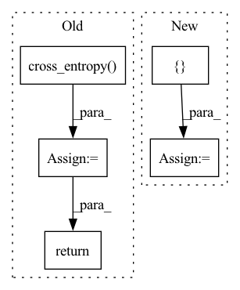

Pattern ID :11318
Before Change
real_label = torch.ones_like(real_y, dtype=torch.int64)[:, 0].long() // [1,1,1]
fake_label = torch.zeros_like(fake_y, dtype=torch.int64)[:, 0].long() // [0,0,0]
real_loss = F.cross_entropy( real_y, real_label) // mean loss
fake_loss = F.cross_entropy(fake_y, fake_label) // mean loss
loss = (real_loss + fake_loss) / 2 + self.l2_reg_lambda * (self.W_O.weight.norm() + self.W_O.bias.norm())
return loss
After Change
loss = loss + self.l2_reg_lambda * (torch.norm(self.W_O.weight, 2) + torch.norm(self.W_O.bias, 2))
pred = torch.cat([ real_y, fake_y = torch.sum((pred.argmax(dim=-1) == target)).item()
acc = acc / pred.size()[0]
return loss, acc
In pattern: SUPERPATTERN
Frequency: 3
Non-data size: 5
Instances Fragment ID: 38476043
Project Name: rucaibox/textbox
Commit Name: f78c75cd5c890e60a063e95617768f9402a1d553
Time: 2020-12-14
Author: 1318829605@qq.com
File Name: textbox/module/Discriminator/LeakGANDiscriminator.py
M Class Name: LeakGANDiscriminator
N Class Name: LeakGANDiscriminator
M Method Name: calculate_loss(3)
N Method Name: calculate_loss(3)
M Parent Class: UnconditionalGenerator
N Parent Class: UnconditionalGenerator
M File Name: textbox/module/Discriminator/LeakGANDiscriminator.py
N File Name: textbox/module/Discriminator/LeakGANDiscriminator.py
M Start Line: 84
M End Line: 93
N Start Line: 86
N End Line: 101
Before Change
real_label = torch.ones_like(real_y, dtype=torch.int64)[:, 0].long() // [1,1,1]
fake_label = torch.zeros_like(fake_y, dtype=torch.int64)[:, 0].long() // [0,0,0]
real_loss = F.cross_entropy( real_y, real_label) // mean loss
fake_loss = F.cross_entropy(fake_y, fake_label) // mean loss
loss = (real_loss + fake_loss) / 2 + self.l2_reg_lambda * (self.W_O.weight.norm() + self.W_O.bias.norm())
return loss
After Change
loss = loss + self.l2_reg_lambda * (torch.norm(self.W_O.weight, 2) + torch.norm(self.W_O.bias, 2))
pred = torch.cat([ real_y, fake_y = torch.sum((pred.argmax(dim=-1) == target)).item()
acc = acc / pred.size()[0]
return loss, acc
Fragment ID: 38476047
Project Name: rucaibox/textbox
Commit Name: 9b5a6ec4e4a248b42892f4a8b7efc8a9a25630f7
Time: 2020-12-14
Author: 1318829605@qq.com
File Name: textbox/module/Discriminator/LeakGANDiscriminator.py
M Class Name: LeakGANDiscriminator
N Class Name: LeakGANDiscriminator
M Method Name: calculate_loss(3)
N Method Name: calculate_loss(3)
M Parent Class: UnconditionalGenerator
N Parent Class: UnconditionalGenerator
M File Name: textbox/module/Discriminator/LeakGANDiscriminator.py
N File Name: textbox/module/Discriminator/LeakGANDiscriminator.py
M Start Line: 84
M End Line: 93
N Start Line: 86
N End Line: 101
Before Change
// ------- classification loss -------
logits = torch.cat((logits1, logits2))
target = target.repeat(2)
class_loss = F.cross_entropy( logits, target, ignore_index=-1)
// just add together the losses to do only one backward()
// we have stop gradients on the output y of the model
loss = neg_cos_sim + class_loss
// ------- metrics -------
acc1, acc5 = accuracy_at_k(logits, target, top_k=(1, 5))
z_std = F.normalize(torch.cat((z1, z2), dim=0), dim=1).std(dim=0).mean()
metrics = {
"train_neg_cos_sim": neg_cos_sim,
"train_class_loss": class_loss,
"train_z_std": z_std,
"train_acc1": acc1,
"train_acc5": acc5,
}
self.log_dict(metrics, on_epoch=True, sync_dist=True)
return loss
After Change
z_std = F.normalize(torch.cat((z1, z2), dim=0), dim=1).std(dim=0).mean()
metrics = {
"train_neg_cos_sim": neg_cos_sim,
"train_z_std": z_std,
}
self.log_dict(metrics, on_epoch=True, sync_dist=True)
return neg_cos_sim + class_loss
Fragment ID: 38476034
Project Name: vturrisi/contrastive-learning
Commit Name: a47bb52eeeb836a919c105a9dcd27930c9124ec4
Time: 2021-06-14
Author: vt.turrisi@gmail.com
File Name: solo/methods/simsiam.py
M Class Name: SimSiam
N Class Name: SimSiam
M Method Name: training_step(3)
N Method Name: training_step(3)
M Parent Class: BaseModel
N Parent Class: BaseModel
M File Name: solo/methods/simsiam.py
N File Name: solo/methods/simsiam.py
M Start Line: 64
M End Line: 101
N Start Line: 62
N End Line: 83